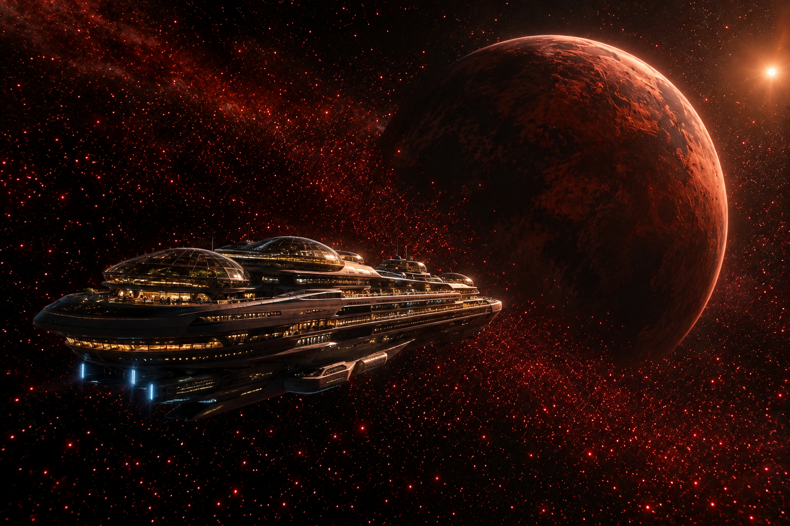
ADRIAN
An Extraordinary Voyage — 48 days from Earth to the most famous planet in the galaxy
ADRIAN — the planet that made history
Made world-famous by the film “Star Eaters”, now open for the first civilian cruises.
What you will find
- Red deserts, black volcanic canyons and heavy, silent skies
- The Astrophages — colossal, bright red beings of pure energy that feed on stars
- A night sky that burns crimson with their passage
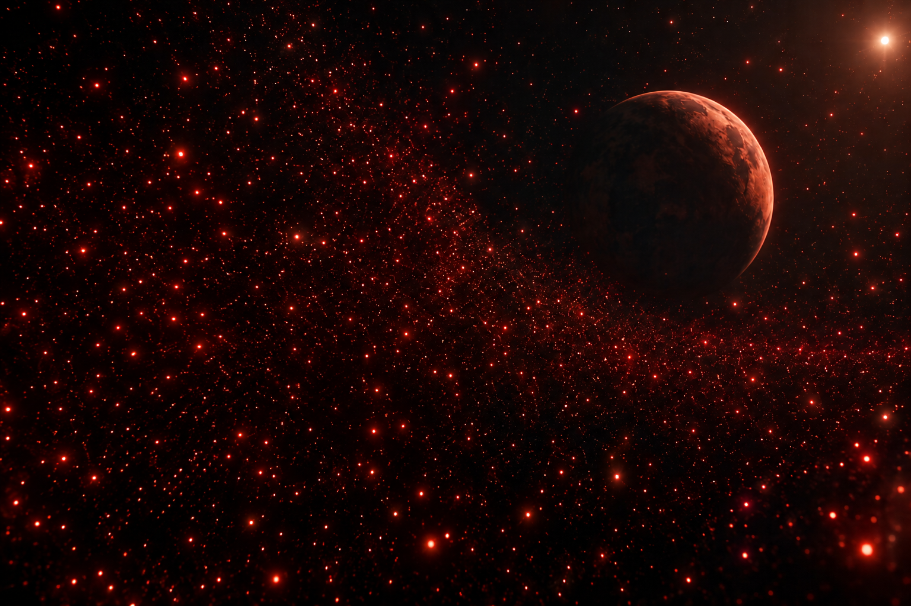
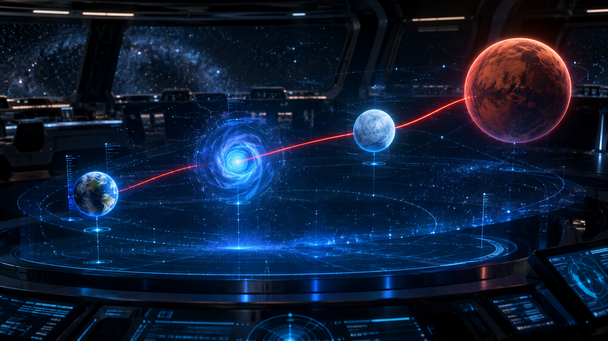
The Route — Earth to Adrian
Hyperdrive jumps through hyperspace, one frozen stopover, and the deep-space cruise.
Leave Earth orbit · adaptation on board the Odyssey
Hyperdrive leg through hyperspace at lightspeed
Stopover at the frozen gateway world · cold excursions
Final cruise to the Adrian system · observatory nights
Landing clearance · first walk on Adrian
On the way
- Two moons and a crimson nebula visible from every deck
Nivara stopover
- Ice fields, adjusted-gravity training halls, thermal suits provided
18 days on Adrian · 12 days home
Days 1–18 · on Adrian
- Short guided walks at first — the gravity demands respect
- Longer excursions unlock from Day 8
- Astrophage watching, canyons, dunes and the red night sky
- Day 18: rest, medical check and boarding
The return cruise
- 12 days of reconditioning before Earth gravity
- Observatory, cinema dome and farewell gala
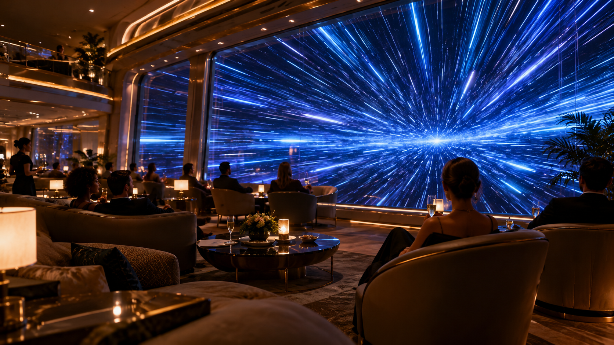
Why you must train — the 1.4 g problem
Adrian’s gravity is 40% stronger than Earth’s. The voyage begins in your body, on Day 1.
What 1.4 g does to you
- Every step, stair and backpack weighs almost half again more
- Legs, heart and balance work overtime — unprepared visitors are exhausted in minutes
- The program also keeps muscles strong through weeks in space, and runs on the return trip too
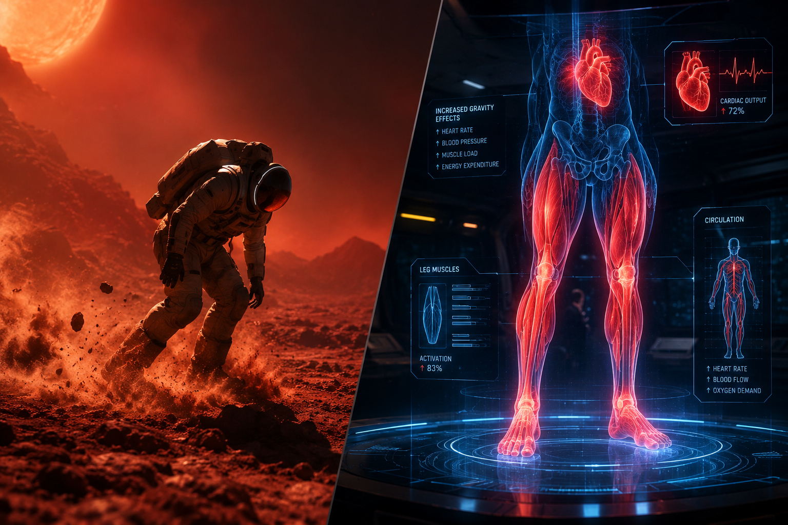
Leaving Earth — Days 1 to 8
The intensity rises gradually. The goal of Phase 1 is simply to build the routine.
Days 1–2 · Adaptation
- Morning: 20 min walking, stretching, mobility
- Afternoon: 15–20 min on the exercise bike
- Light work for legs and back
Days 3–6 · First hyperdrive leg
- 45 min/day: treadmill 15 · bike 15 · resistance 10 · stretching 5
- Gym built for interstellar travel
Days 7–8 · Nivara
- Resistance-equipment training
- Artificial gravity raised step by step on board
- Cold-weather excursions in thermal suits
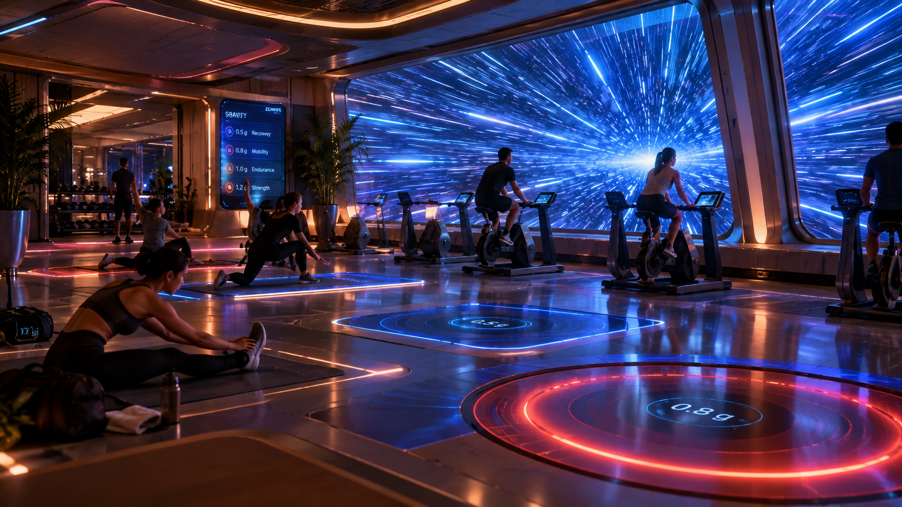
The final approach — Days 9 to 18
The most important phase of the outbound voyage: 60 minutes a day, legs first.
Days 17–18 · Medical clearance
- Tests: endurance, heart rate under effort, balance, walking capacity, gravity-load adaptation
- Approved → authorization for your first walk on Adrian
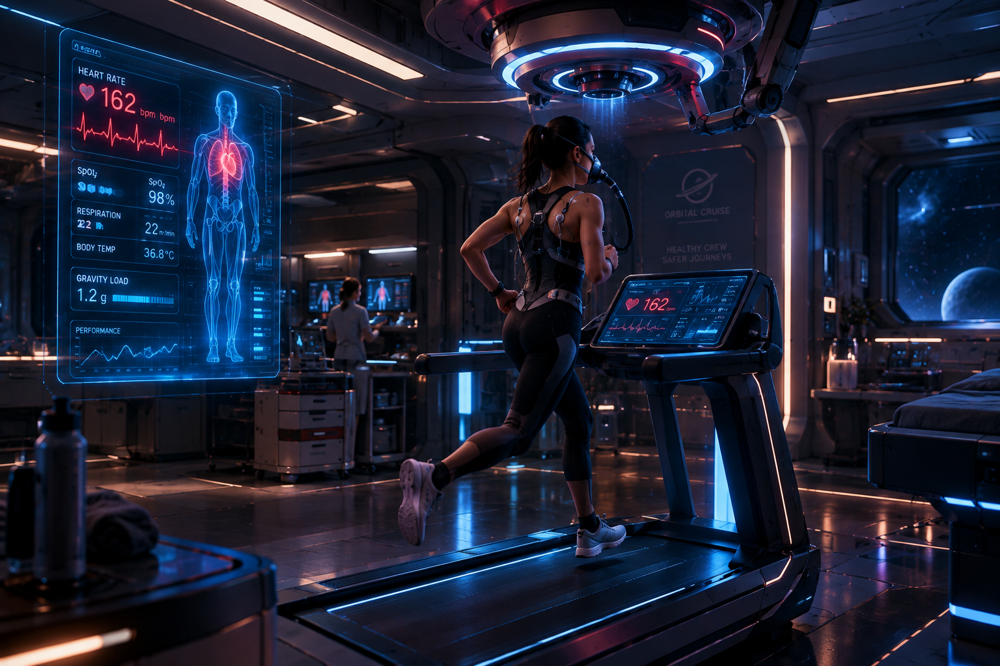
18 days at 1.4 g — walk before you run
On Adrian, simply walking is already a workout. No heavy training on arrival — the planet does it for you.
Days 1–3
- 20–30 min walking
- then 30–40 · then 40–50 min
Days 4–7
- Up to 60 min of moderate activity
Days 8–14
- Long excursions unlocked 🎉
Days 15–18
- Normal activities + prep for lighter gravity
- Day 18: rest & boarding
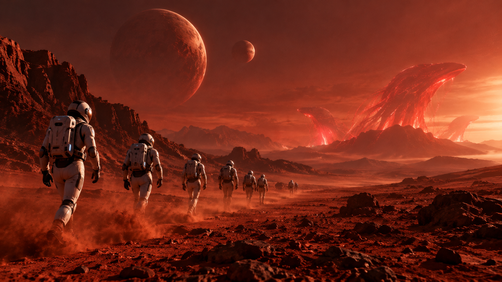
The return — back to lightness
After 18 days at 1.4 g, the ship suddenly feels weightless. Guests describe it as “walking on feathers” — so the routine goes back under control.
Return · Days 1–4
- Light exercise, stretching, bike, short walks
Return · Days 5–12
- 45–60 min/day: cardio 20 · resistance 20 · mobility 10
- Adjustable-gravity training sessions
Final days
- Breathing exercises · medical evaluation
- Rest — ready for Earth
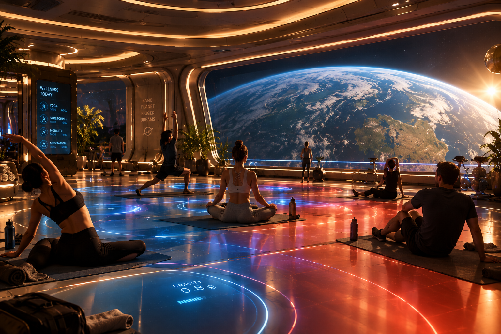
One gym, three gravity zones
Artificial gravity is adjustable — we train for exactly the world we are flying to.
🟢 Zone 1 · Normal
- Recreational exercise, yoga, stretching
🟡 Zone 2 · Increased
- Daily conditioning for every guest
🔴 Zone 3 · High load
- Heavy training for Adrian excursion guests
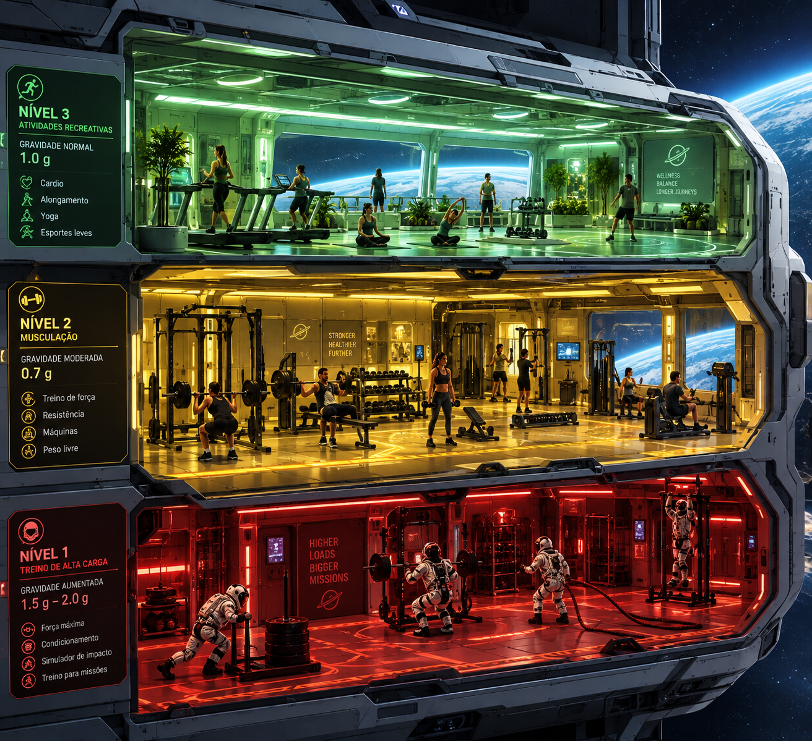
The Astrophages — stars given life
The film “Star Eaters” turned Adrian into legend. The creatures are real — and they are waiting.
Meet the astrophages
- Colossal beings of pure, bright red energy
- They drift between the stars, feeding on them — hence the film’s name
- On Adrian, the night sky burns crimson as the herds pass
On this cruise
- You don’t watch them on a screen. You float among them.
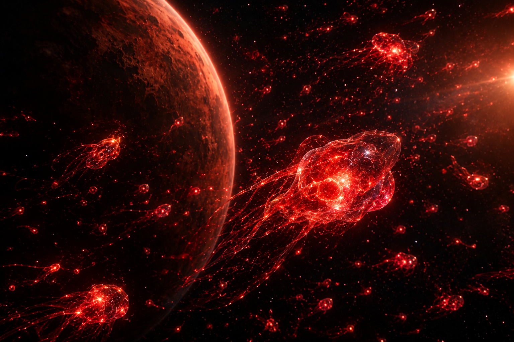
Excursions — unlocked on Day 8
One week of training, and the planet opens its doors.
What you will do
- Walk canyons of black volcanic rock under a red sky
- Cross the singeing dunes of the Crimson Sea
- Watch astrophage herds rise from the valleys like living lanterns
Always included
- Expert guides · premium suits · medical tracking
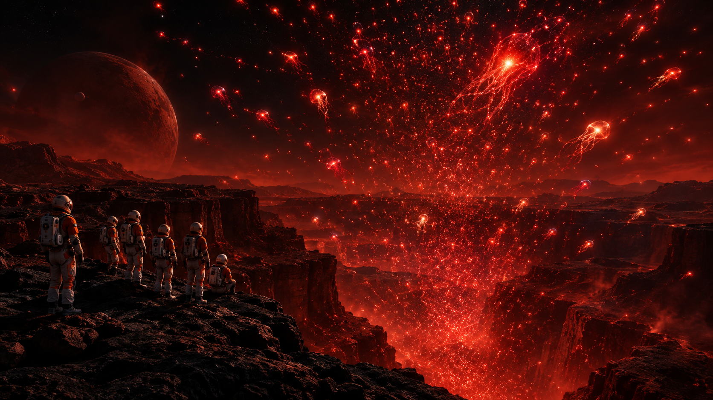
Not a fan of training? The Astrophage Encounter
Leave the ship in a premium suit and float among the bright red astrophages — in zero gravity.
Why it needs so little preparation
- In zero gravity your body weight doesn’t matter — no 1.4 g strain
- Only a short suit & safety briefing is required
- Open to every guest, at every age, on any day of the stay
The price of comfort
- No surface walks, no canyons — the astrophages come to you
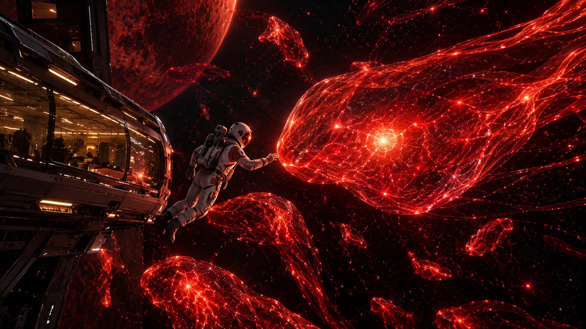
A day aboard the Odyssey
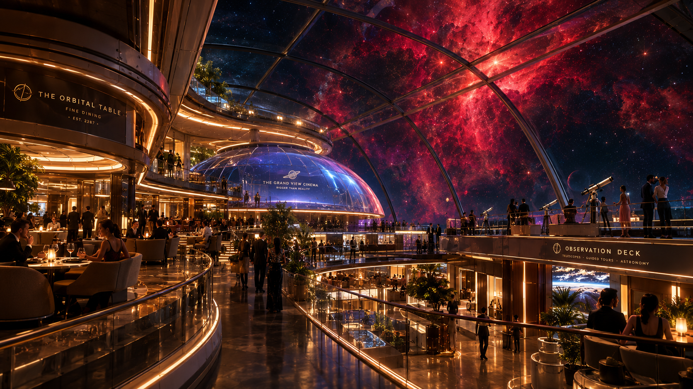
Mandatory notice
⚠ Terms of carriage — Adrian voyage
- By booking, the guest acknowledges that the Interstellar Conditioning Program is mandatory for all surface excursions.
- Guests who choose not to train remain on board and enjoy the zero-g Astrophage Encounter deck.
- Odyssey Interstellar Cruises is not responsible for any deaths.
Odyssey Interstellar Cruises Ltd. — By confirming this reservation the passenger declares having read, understood and accepted all physical preparation requirements established in the Interstellar Conditioning Program, including its medical evaluation stages. The company disclaims any and all liability for accidents, injuries, gravitational exhaustion or death occurring during the voyage, on the surface of Adrian, or in open space. Space is beautiful. Space is also space.
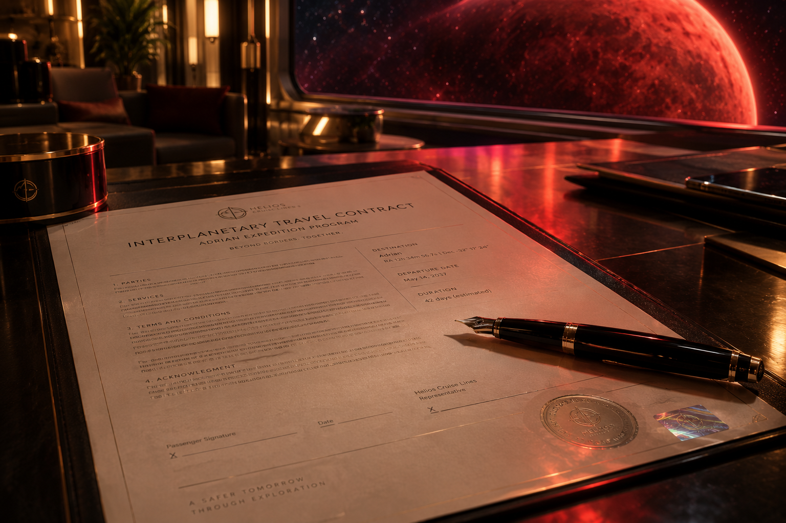
ADRIAN IS WAITING.
Train for it.
Thank you! Any questions?